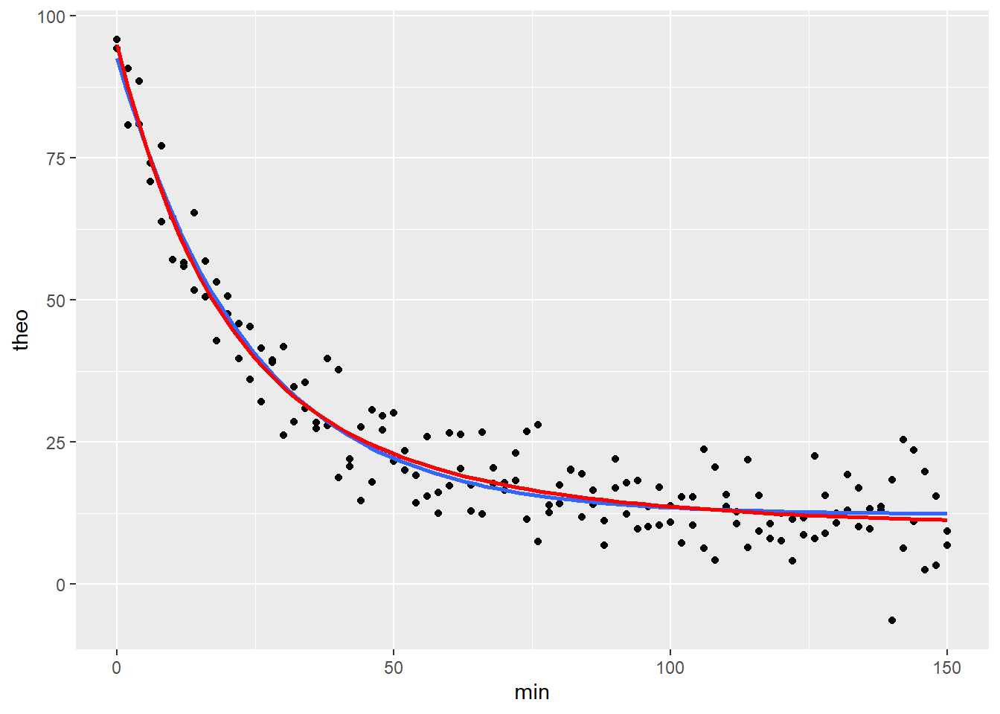
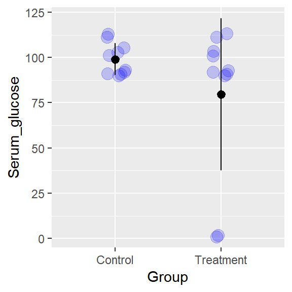

Chapter 35 Nested-model nonlinear regression of duplicate measures
It’s like the difference between a glove that has five fingers instead of three. When you have five fingers, you’d expect a five finger glove to fit better. If you were missing two fingers, a three finger glove would be a better fit.
library(tidyverse)
library(broom)
library(minpack.lm)
library(viridis)
library(knitr)The most common approach to estimating nonlinear model parameter values is to perform a regression on each independent replicate of an experiment. After several of these one has a list of independent values for a parameter of interest. In this chapter I’ll go over a nonlinear regression analysis of data from a single replicate with duplicate response measures.
This analysis has two objectives. The first is to derive a best fit parameter value from a regression model. The second is to determine whether the data are best fit by one or the other of two nested models. The results of this best fit test will direct which parameter values to accept.
The theopOneRep.csv data set is an example of a single replicate of an experiment performed with duplicate measurements of the outcome variable. We’ll use that one replicate to illustrate how to do a nonlinear regression.
The data are from an in vitro drug metabolism assay. A rat liver microsome prep was spiked with the drug theophylline (an ingredient of tea and coffee). At 2 minute intervals over 2.5 hrs aliquots were withdrawn to measure remaining theophylline levels.
In this instance, the microsomes were derived from a rat that had been treated in a microenvironment laden with cigarette smoke. Hydrocarbons in smoke are known to induce a cytochrome p450 enzyme, CYP1A2, that metabolizes theophylline more rapidly than occurs normally.
An objective of the nonlinear regression is to determine the rate constants for theophylline decay. The prediction is that exposure of the rats to cigarette smoke will cause two distinct phases of theophylline decay in the microsomes, one with a short half-life, and a second with a longer half-life. These would represent, respectively, the more rapid and the slower metabolism phases.
35.1 Read and plot the data
Get familiar with the structure of the data set.
The data have four variables: * min is time, a continuous predictor variable. * smoke is a discrete predictor variable with only one value in this set where Y = exposed to cigarette smoke. * id is a value assigned to identify the duplicate values, r1 or r2 * theo is theophylline concentration levels, in ng/ml
The data represent one independent replicate with duplicate measurements per time point.
theopOne <- read.csv("datasets/theopOneRep.csv")
str(theopOne)## 'data.frame': 152 obs. of 5 variables:
## $ X : int 1 2 3 4 5 6 7 8 9 10 ...
## $ min : int 0 2 4 6 8 10 12 14 16 18 ...
## $ smoke: Factor w/ 1 level "Y": 1 1 1 1 1 1 1 1 1 1 ...
## $ id : Factor w/ 2 levels "r1","r2": 1 1 1 1 1 1 1 1 1 1 ...
## $ theo : num 94.2 80.8 88.5 70.9 63.8 57.1 55.9 65.3 56.9 53.2 ...Here’s a plot of all the data. Notice how the duplicate values from the assay are shown. The curves are on-the-fly nonlinear regression fits that are run within the ggplot function. Below, we’ll run these again to generate results.
ggplot(theopOne, aes(x=min, y=theo))+
geom_point()+
#one-phase decay model
stat_smooth(method="nls",
method.args=list(
start=c(yhi=100, ylo=10, k=0.03)),
formula="y~ylo+((yhi-ylo)*exp(-k*x))",
se=F #you need this argument to generate nls smooths!!
)+
#two-phase decay model
stat_smooth(method="nls",
method.args=list(
start=c(yhi=100, ylo=10, kf=0.05, ks=0.005, pf=0.5)),
formula="y~ylo + (pf*(yhi-ylo)*(exp(-kf*x))) + ((1-pf)*(yhi-ylo)*(exp(-ks*x)))",
se=F,
color="red"
)
The formulas for the nonlinear models are for both a one-phase first order decay process (blue) and a two-phase process (red). By the bloody obvious test the two seem equivalent fits. But we’ll be able to test, statistically, whether a two-phase first order decay model provides a better fit.
It is hard to overstate the importance of creating these preliminary graphs with regression curves before conducting the regression analysis. Seeing how well your model formula fits the data helps ensure you’ve written the formula correctly. This process will help you interpret the regression output. Plotting and running the regression itself are hand-in-glove work tasks.
A forewarning: Getting these models to regress onto data properly for these plots takes some patience.
Some tips:
- Sometimes it’s possible to draw a curve without providing a start list for parameter estimates in the
method.argsargument. Usually it is not. If having trouble also theselfStartargument innls. - Note the formula in ggplot is of the general form
y ~ xrather thantheo ~ min. Use the general form notation in these stat_smooth functions! - Make sure the formula segments are properly demarcated using parenthesis. For example
yhi-ylo*exp(-k*x)is not the same as(yhi-ylo)*exp(-k*x). - Curves won’t draw in ggplot without the
se=Fargument! Be sure to add it. - Does it fail to converge on a solution? Try different algorithms (
plinearorport) rather than the Gauss-Newton default. You might also try using thenlsLMfunction for itsL-Malgorithm, which is not available innls. - Fix the values of nonessential parameters. For example, set
yhi=100, particularly if the data have already been transformed to %max. - The data may just be crappy. You may need more or better data points for a curve to run.
- The more parameters you need to fit, the less likely the formula converges to a solution.
35.2 Perform the nonlinear regression
The main goal here is to derive drug half-life values. Also, because smoking induces CYP1A2 which metabolizes theophylline more rapidly, we have reason to believe these data might be better fit by a two-phase first order decay model, rather than a one-phase decay model.
We’ll run regressions for both models to derive estimates for the parameter values for each. Then we’ll do an F test to see if the two-site model serves as a better fit. On the basis of this latter test, we’ll make the decision on which parameter values to report for this replicate.
Here’s a one-phase model fit. The fit object contains a lot of information. See the broom package to understand the source of the reporting functions. They’re useful. For example, we could take the augment output directly into ggplot to create a residual plot for the fitted model.
fit1 <- nls(formula=theo~(((yhi-ylo)*exp(-k*min))+ylo),
data=theopOne,
start=list(yhi=100, ylo=15, k=0.693/20)
)
tidy(fit1, conf.int=T)## # A tibble: 3 x 7
## term estimate std.error statistic p.value conf.low conf.high
## <chr> <dbl> <dbl> <dbl> <dbl> <dbl> <dbl>
## 1 yhi 92.6 2.18 42.5 3.30e-85 88.2 97.0
## 2 ylo 12.3 0.723 17.0 8.37e-37 10.8 13.7
## 3 k 0.0420 0.00215 19.5 7.65e-43 0.0377 0.0466augment(fit1)## # A tibble: 152 x 4
## theo min .fitted .resid
## <dbl> <int> <dbl> <dbl>
## 1 94.2 0 92.6 1.64
## 2 80.8 2 86.1 -5.30
## 3 88.5 4 80.2 8.34
## 4 70.9 6 74.7 -3.80
## 5 63.8 8 69.7 -5.88
## 6 57.1 10 65.1 -7.96
## 7 55.9 12 60.8 -4.92
## 8 65.3 14 56.9 8.38
## 9 56.9 16 53.3 3.57
## 10 53.2 18 50.0 3.17
## # ... with 142 more rowsglance(fit1)## # A tibble: 1 x 8
## sigma isConv finTol logLik AIC BIC deviance df.residual
## <dbl> <lgl> <dbl> <dbl> <dbl> <dbl> <dbl> <int>
## 1 5.55 TRUE 0.00000182 -475. 958. 970. 4596. 149Here’s a two-phase model fit and I’m using functions from the broom package to print out more readable results.
fit2 <- nls(
theo~((pf*((yhi-ylo)*exp(-kf*min)))+
((1-pf)*((yhi-ylo)*exp(-ks*min)))+
ylo),
data=theopOne,
start=list(
yhi=115,
ylo=15,
pf=0.4,
kf=0.06,
ks=0.02)
)
kable(tidy(fit2)) #conf.int omitted due to Error| term | estimate | std.error | statistic | p.value |
|---|---|---|---|---|
| yhi | 94.8670132 | 2.8899372 | 32.8266696 | 0.0000000 |
| ylo | 10.2726177 | 3.9472525 | 2.6024729 | 0.0102032 |
| pf | 0.6233901 | 0.7577952 | 0.8226366 | 0.4120471 |
| kf | 0.0615518 | 0.0412898 | 1.4907278 | 0.1381757 |
| ks | 0.0226730 | 0.0306633 | 0.7394167 | 0.4608331 |
augment(fit2)## # A tibble: 152 x 4
## theo min .fitted .resid
## <dbl> <int> <dbl> <dbl>
## 1 94.2 0 94.9 -0.667
## 2 80.8 2 87.3 -6.55
## 3 88.5 4 80.6 7.90
## 4 70.9 6 74.5 -3.63
## 5 63.8 8 69.1 -5.28
## 6 57.1 10 64.2 -7.06
## 7 55.9 12 59.7 -3.84
## 8 65.3 14 55.7 9.56
## 9 56.9 16 52.1 4.76
## 10 53.2 18 48.9 4.33
## # ... with 142 more rowskable(glance(fit2))| sigma | isConv | finTol | logLik | AIC | BIC | deviance | df.residual |
|---|---|---|---|---|---|---|---|
| 5.53567 | TRUE | 3.6e-06 | -473.2409 | 958.4819 | 976.6252 | 4504.616 | 147 |
35.2.1 Troubleshooting the regression
Some of the same tips for plotting a curve apply apply to running the function. Note here we use the variable names in the data set, rather than \(y\) and \(x\).
See for more tips to get the regression to converge to a solution.
35.2.2 Interpreting the parameters
Each model has a table of parameter estimates.
The one-phase model has three parameters, \(yhi\), \(ylo\) and \(k\), the rate constant. The difference between \(yhi\) and \(ylo\) is the dynamic signal range, or span, of the results.
The two-phase model estimates values for these span limits along with three other parameters. \(pf\) estimates the fraction of decay that is in a rapid component. \(kf\) and \(ks\) represent the fast and slow decay rate constants.
35.2.2.1 Driven by science
Your scientific objectives determine which of these parameters are important to you. Sometimes you are interested in the dynamic range. Other times you are interested in rate constants. Sometimes you are interested in both. Whichever you focus on depends on why you ran the experiment in the first place.
Whether the t-tests in the parameter table have any utility depends upon the experimental design. If every data point were independent of every other data point they would have some inferential utility. In this case, where all data points are intrinsically-linked, the t-tests only offer technical utility. Each tests the null hypothesis that the parameter value is equal to zero.
When the value is not different from zero, then that parameter has no predictive effect on values of the response variable. Plug a value of zero into the equation for that parameter to see what it does.
In this case, these t-tests, which are negative for the rate constants and the fraction parameter, signal that the two-phase fit is not a good one for these data. These t-tests, which are just signal to noise ratios, signal that the parameter estimates for the two-phase model are unreliable.
That is not the case for the one-phase model.
However, we’ll do an F test (below) to conduct formal inference on which model fits better. You’ll see that result is consistent with the technical interpretation of the t-tests.
35.2.3 Residual plots to compare fits
Residual plots are useful to compare fits. Here, the horizontal line at zero represents either model. The residuals for either model are also plotted. These represent the differences between the values of the data and the predicted values for the model at the same levels of \(X\).
The red points are the residuals for the one-phase model. The blue points are the residuals for the two phase model.
We don’t see any remarkable differences from their models. Visually, as for the curves, it’s difficult to conclude one model fits better than the other.
#for plotting, create one dataframe with residuals for both models
fits <- bind_cols(augment(fit1),
augment(fit2)[,3:4]) %>%
rename(fit1=.fitted,
resid1=.resid,
fit2=.fitted1,
resid2=.resid1)
fits## # A tibble: 152 x 6
## theo min fit1 resid1 fit2 resid2
## <dbl> <int> <dbl> <dbl> <dbl> <dbl>
## 1 94.2 0 92.6 1.64 94.9 -0.667
## 2 80.8 2 86.1 -5.30 87.3 -6.55
## 3 88.5 4 80.2 8.34 80.6 7.90
## 4 70.9 6 74.7 -3.80 74.5 -3.63
## 5 63.8 8 69.7 -5.88 69.1 -5.28
## 6 57.1 10 65.1 -7.96 64.2 -7.06
## 7 55.9 12 60.8 -4.92 59.7 -3.84
## 8 65.3 14 56.9 8.38 55.7 9.56
## 9 56.9 16 53.3 3.57 52.1 4.76
## 10 53.2 18 50.0 3.17 48.9 4.33
## # ... with 142 more rowsggplot(fits, aes(min,resid1))+
geom_point(color="red")+
geom_point(aes(min, resid2), color="blue")+
geom_hline(yintercept=0) ### F test for model comparison
There are a few ways to choose whether one regression model fits the data better than another. Only one of these methods should be used, and typically, that choice is made in advance of performing an analysis in order to limit bias.
One way to decide which model provides a better fit to the data is using the extra sum of squares F-test.
This F test is constructed as follows: \[F_{df_1, df_2}=\frac{\frac{SSR1-SSR2}{df_1-df_2}}{\frac{SSR2}{df_2}}\]
\(SSR1\) is the sum of the squared residuals for the simpler model, \(SSR2\) is the sum of the squared residuals for the more complex model, and \(df_1\) and \(df_2\) are the degrees of freedom for each, respectively.
Hopefully, you’ve reached a point in your statistical knowledge that you’re getting a good grasp on the concept of residuals, what they mean, and how they are used to calculate variance.
Perhaps it now seems intuitive to you that the best fit model would the the one that produces the lowest residual variance. It’s like the difference between a glove that has five fingers instead of three. When you have five fingers, you’d expect a five finger glove to fit better. If you were missing two fingers, a three finger glove would be a better fit.
Models that fit better have lower residual variance.
This F ratio tests whether the variance of the difference between two models (the numerator) is greater than the variance of the model having more parameters (the denominator).
Or you can think about it like this: The more the fits of the two models differ, the greater the ratio of the variance of the differences to the variance of the model having more parameters.
This test is run by passing the model fits into the anova function as follows:
anova(fit1, fit2)## Analysis of Variance Table
##
## Model 1: theo ~ (((yhi - ylo) * exp(-k * min)) + ylo)
## Model 2: theo ~ ((pf * ((yhi - ylo) * exp(-kf * min))) + ((1 - pf) * ((yhi - ylo) * exp(-ks * min))) + ylo)
## Res.Df Res.Sum Sq Df Sum Sq F value Pr(>F)
## 1 149 4595.5
## 2 147 4504.6 2 90.902 1.4832 0.2303The F tests the null hypothesis that the variance for the difference between the two fits is the same as the variance of the two-phase fit.
That F-test value is not extreme for a null F distribution with 2 and 147 degrees of freedom. In terms of decision-making, this test generates a p-value that is greater than the typical type1 error threshold value of 0.05.
Therefore, would not reject the null hypothesis that the ratio of variances of the two fits are the same.
Which all means the the one-phase decay model is a better fit for these data.
35.2.4 Compare AIC
An alternative approach to decide which of two model fits the data better is to compare the Akaike information criterion (AIC) between two models. The BIC is a highly related computation.
The AIC statistic attempts to quantify the quality of the fit for a model by simultaneously accounting for its maximum likelihood and the number of model parameters.
AIC is not standardized, so the value of any one AIC calculation alone is not readily interpreted. However, a comparison to another AIC for a related model can be interpreted. Furthermore, there is no p-value associated with AIC comparison. Instead a sliding scale is used for inference rather than a single threshold.
The AIC is calculated using \(n_{par}\), the degrees of freedom for the log-likelihood estimate which can be derived from the output of running a logLik test on the model fit; \(k\), a per parameter penalty, which is usually set at 2; and the log-likelihood value of a fit, \(logLik\): \[AIC=kn_{par}-2logLik\]
kable(
fits.2 <- bind_rows(
glance(fit1),
glance(fit2)) %>%
add_column(
fit=c("fit1", "fit2"),
.before=T)
)| fit | sigma | isConv | finTol | logLik | AIC | BIC | deviance | df.residual |
|---|---|---|---|---|---|---|---|---|
| fit1 | 5.553593 | TRUE | 1.8e-06 | -474.7593 | 957.5187 | 969.6142 | 4595.518 | 149 |
| fit2 | 5.535670 | TRUE | 3.6e-06 | -473.2409 | 958.4819 | 976.6252 | 4504.616 | 147 |
| The dif | ference bet | ween two | AIC values | compares tw | o fits, alw | ays subtrac | ting the fi | t with the minimal AIC value from the other. |
deltaAIC <- fits.2[2,6]-fits.2[1,6]
deltaAIC## AIC
## 1 0.9632172A loose scale to interpret the difference between two AIC values has been developed based upon an information theory method for comparing distributions called the KL divergence.
To summarize that: When
\(\Delta AIC < 2\) there is substantial support for the model with the larger AIC. \(2<\Delta AIC < 4\) there is strong support for the model with the larger AIC. \(4<\Delta AIC < 7\) there is less support for the model with the larger AIC. \(\Delta AIC > 10\) there is almost no support for the model with the larger AIC.
In practice, you’ll find that application of the AIC comparison process forces you to accept the most parsimonious model unless there is overwhelming evidence that one with more parameters fits better. You’ll find it works in a way that is very similar to the bloody obvious test.
In the case of our present example, the \(\DeltaAIC\) of 0.96 indicates that their can be little doubt that the one-phase model is the better fit.
35.2.5 Other ways to compare models
For further information on comparing regression models, here’s an excellent resource
35.2.6 Interpretation of this one replicate
These types of experiments generate a lot of data and statistical output. It’s easy to be overwhelmed or to think there is more going on (or needs to be done) than there really is.
Just keep the focus on the scientific objective for the experiment. In this case, all we want is to derive an estimate for a drug half life for this single replicate.
This experiment will be repeated independently multiple times, including analysis of theophylline decay in microsomes prepared from control subjects, unexposed to cigarette smoke. The half-life values will serve as the response variables for this comparison.
That half-life is related to the decay rate constants in the output above by the relationship \(k=\frac {log(2)}{t_{1/2}}\).
To keep things less confusing, let’s stick to solving this by discussing the \(k\) values for now. We’ll calculate \(t_{1/2}\) once that decision is made.
35.2.6.1 Which rate constant parameter is our estimate?
We have to make a decision about which is the right \(k\) value out of all the \(k\) values in the output above.
Because cigarette smoke is known to induce an enzyme that more rapidly metabolizes theophylline, there was a scientific basis to believe that the data might be better fit by a two-phase decay model. That model produces two \(k\) values, \(kf\) and \(ks\). The one-phase model produces only a single \(k\) value.
Which of these models to accept?
I’m a fan of the F-test approach, mostly because I’ve used it a lot in the past. I’m agnostic about whether this or the AIC comparison is a better way to go about selecting the best fit. I’d need to run some simulations to convince my self one is better than the other for a given problem.
The results of the anova F test comparing the two fits guide the decision. That results indicates that the difference in residual variation between the one and two phase models is not greater than would be expected if the two models fit the data differently.
Therefore, we accept the most parsimonious model as the appropriate fit for the data, which is the one-phase model.
Let’s call the regression coefficients up from that one-phase model fit to have another look:
kable(tidy(fit1))| term | estimate | std.error | statistic | p.value |
|---|---|---|---|---|
| yhi | 92.5573834 | 2.1770713 | 42.51463 | 0 |
| ylo | 12.3232038 | 0.7233171 | 17.03707 | 0 |
| k | 0.0419568 | 0.0021520 | 19.49628 | 0 |
For this replicate, \(k=0.04195679\).
That’s it.
That one number is all we need to extract for all the effort! All of this fiddling and all we want is that.
In fact, we really don’t need anything else in the table. The span between yhi and ylo in this particular problem has no great biological importance. It just says the signal to noise in the system is about an 8X range.
The t-test statistics in the table are created by dividing the estimate value by the standard error. They tests the null hypothesis that the parameter estimate value is equal to zero.
However, this serves no real inferential purpose from this one replicate because this is just an n=1 experiment. All of the data points within this sample are intrinsically-linked. This t-test would only be useful if each data point were independent of all other data points. But that’s not this experimental design.
35.2.7 Alternate analysis
In the example above we did the regression on the average of the technical replicates. That’s not a bad idea sometimes, particularly when the degrees of freedom are fairly low (which is not the case here).
First, average the technical reps for each time point:
#first, average the duplicates
theopOne.avg <- theopOne %>%
group_by(min) %>%
summarise(theo=mean(theo)) %>%
add_column(id="R", .before=T)Next, run a one-phase first order decay nonlinear regression on the technical replicates. What you’ll see is that the parameter estimates are identical to their values when the duplicates were regressed. :
fit1a <- nls(
theo~(((yhi-ylo)*exp(-k*min))+ylo),
data=theopOne.avg,
start=list(
yhi=100,
ylo=15,
k=0.693/20)
)
kable(tidy(fit1a), caption="One-phase Fit on Average of Duplicates")| term | estimate | std.error | statistic | p.value |
|---|---|---|---|---|
| yhi | 92.5573834 | 1.6364812 | 56.55878 | 0 |
| ylo | 12.3232038 | 0.5437097 | 22.66504 | 0 |
| k | 0.0419568 | 0.0016177 | 25.93663 | 0 |
kable(glance(fit1a), caption="One-phase Fit on Average of Duplicates")| sigma | isConv | finTol | logLik | AIC | BIC | deviance | df.residual |
|---|---|---|---|---|---|---|---|
| 2.951872 | TRUE | 3.5e-06 | -188.5743 | 385.1486 | 394.4716 | 636.0889 | 73 |
fit2a <- nls(
theo~((pf*((yhi-ylo)*exp(-kf*min)))+
((1-pf)*((yhi-ylo)*exp(-ks*min)))+
ylo),
data=theopOne.avg,
start=list(
yhi=115,
ylo=15,
pf=0.4,
kf=0.06,
ks=0.02)
)
kable(tidy(fit2a), caption="Two-phase Fit on Average of Duplicates")| term | estimate | std.error | statistic | p.value |
|---|---|---|---|---|
| yhi | 94.8670140 | 2.1294364 | 44.550292 | 0.0000000 |
| ylo | 10.2726207 | 2.9085073 | 3.531922 | 0.0007295 |
| pf | 0.6233894 | 0.5583784 | 1.116428 | 0.2680029 |
| kf | 0.0615519 | 0.0304242 | 2.023119 | 0.0468272 |
| ks | 0.0226730 | 0.0225941 | 1.003492 | 0.3190314 |
kable(glance(fit2a), caption="Two-phase Fit on Average of Duplicates")| sigma | isConv | finTol | logLik | AIC | BIC | deviance | df.residual |
|---|---|---|---|---|---|---|---|
| 2.884241 | TRUE | 7e-06 | -185.7572 | 383.5144 | 397.4988 | 590.6379 | 71 |
The regression arrives at the exact same value for the rate constant, \(k\) as it does for when the regression was on the duplicates. The deviance (SS) and other measures of variability are lower, as are the degrees of freedom.
35.3 Summary
In this chapter we went through the fairly common problem of running an analysis on duplicate measurements from one replicate. The first step is to visualize the data and to try to plot a regression line on it. That points you in the right direction in terms of regression model selection.
In this case, we went through a process of running regressions on two nested models before deciding which fit better. That’s something that should be planned in advance because it involves some decisions that could generate biased solutions. Sometimes the scientific issue of choosing between models is not there, and you’d just fit a model and grab the parameters of interest.